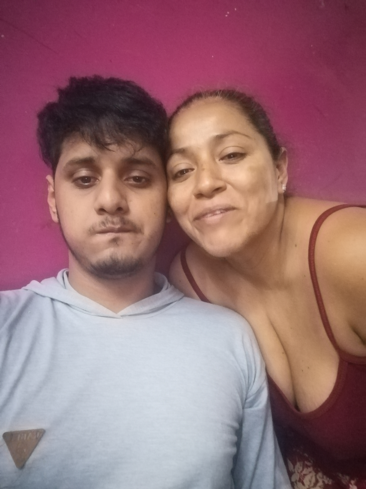

Querida mamá,
Se que no hay palabras que yo te puedo dar para expresar lo que siento. Literalmente aunque diga que me estoy volviendo en un monstruo por mi resentimiento. Aun una gran parte de mi te ama demasiado como a mi Papá aunque por mi orgullo y cobardia no te lo digo seguido como lo hace mi tio Brayan a mi Mama Leti. Aun asi aprobecho a decirlo esta pequeña pagina que hice ya que posiblemente nomas te llame para felicitarte tu dia. Mama apesar de que soy un mal hablado me revelo demasiado a tí la verdad no se porque lo hago ese día antes de la fiesta no puedo decir que me siento mal por lo que dije porque seria mentirte pero si me logro afectar que libere algo de mi resentimiento a odios de los que estaban en la casa por eso era no creo volver a Chulucanas, se que no es verdad o tal vez si lo sea pero yo me siento como una decepcion para toda la familia porque como tu misma lo dijiste "no creci para se mejor" sino cada día estoy cayendo más y más. Tú ni mi Papá se merecen a un hijo como yo. Soy una persona rota, egoista, caprichoso, orgullo y ultimamente me he vuelto más insencible que me da miedo ya que no se que me deparar el futuro o como me volvere. Solo quiero que sepas de lo que me haga o me pase no es tú culpa fuiste la mejor madre que yo pude haber pedido. Por lo cual quiero que seas feliz aunque la distancia nos separe y no pueda escuchar mucho de ti y no que no puedas escuchar de mi deseo de todo corazon que seas feliz que cuides a Arian mejor que a mi. Asi tal vez no se volvera como yo. Cuidare y tratare de apoyar a Esau lo mejor que pueda cuando termine mi carrera porque es mi unico hermano que tengo y entre ambos ya no queremos ser una carga para tí. Asi que mamá ¡Te amo mucho!.
|  |
|